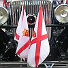

Tchi pliaîsi d'vaie toutes les p'tites couleurs d'Jèrri à l'êtente avaû les rues d'la Ville! Ch'tait mangnifique dé vaie Saint Hélyi en fête pouor l'Jour d'la Libéthâtion, et d'vaie des couleurs pavannées sus des bâtisses et boutiques et par les pièches.
Tchi pliaîsi d'vaie toutes les p'tites couleurs d'Jèrri à l'êtente avaû les rues d'la Ville! Ch'tait mangnifique dé vaie Saint Hélyi en fête pouor l'Jour d'la Libéthâtion, et d'vaie des couleurs pavannées sus des bâtisses et boutiques et par les pièches.
Et j'avons ieu des nouvelles entouor des couleurs. Eune nouvelle couleu fut lanchie au mais d'Mai - eune couleu d'Jèrri en trian pouor haûlîndgi ès mâts quand nou n'peut pon haûlîndgi eune couleu ordinnaithe dé peux qu'ou n'sait êtrilyie par la dgêle. Épis nou-s'a proposé eune nouvelle couleu pouor les batchieaux - eune rouoge enseigne. Ouaithe qué j'n'aie pon d'baté, j'sis tout à fait en faveu. Si les gens veulent acater eune couleu à seule fîn d'distîndgi lus batchieaux, v'là tch'est bein pouor Jèrri quand i' vîsitent des nouvieaux hâvres à l'êtrangi. Tout coumme, jé n'sis pon en tout convaintchu par l'êtchusson proposé sus la rouoge enseigne, car y'a la couronne d'ssus. Ch'est en tchi not' bliue enseingne a l'êtchusson d'Jèrri sans couronne.
Ché s'sait-i' eune idée d'changi l'êtchusson d'Jèrri en y ajouôtant la couronne? Est-i' d'mêtchi d'couronner nos trais léopards à touos les bords? Ché s'sait pus à co bigathé d'aver l'êtchusson sans couronne sus la bliue et l'chein auve la couronne sus la rouoge, et sus la couleu en trian et sus la couleu nâtionnale.
L'originne d'la couleu d'Jèrri est un mio mystéthieuse et y'a des difféthents avis là-d'ssus. Mais la vèrsion couronnée d'achteu fut procliâmée y'a quâsiment trente ans exactément. Ch'fut au mais d'Dézembre 1980 qu'la Reine, not' Duc, procliâmit la nouvelle couleu d'Jèrri auve l'êtchusson couronné. Chutte couleu fut haûlîndgie pouor la preunmié fais en 1981.
D'aut' bord en Ûrope, l'année 1981 n'tait pon si heutheuse. En Polongne, un régînme militaithe fut dêcliathé ch't' année-là. Coumme j'savons bein, nos anmîns Polonnais ont 'té libéthés d'pis eune pause ieux étout, Dgieu mèrci. Et l'êtchusson Polonnais a r'ieu eune couronne étout. Nous, j'avons des léopards couronnés, et ieux, il' ont un aigl'ye dé tchi les Communistes halîtent la couronne. L'aigl'ye fut r'couronné en 1990.
La couronne, coumme la couleu, peut êt', coumme nou vait, un sŷmbole d'la libèrté.
Geraint Jennings
 |
 |
 |  |
 |
 |
Viyiz étout: